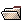
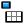
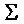
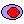
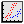

Browser Window
The main TOPCAT window is a JTable
view of the table which can be scrolled
around to see all the cells. This contains several menus and toolbar
buttons which can be used to open other windows giving different views
of the tables.
Toolbar
In addition to the tools to show other windows, the toolbar contains
the following buttons:
- Open
- Open a new table in a new browser window.
Also available as the Open item in the File menu.
See the section on Loading tables.
 Duplicate
Duplicate
- Open a new browser window holding a copy of the currently visible table.
This new window is not identical to the current one in that any
subsetting or sorting applied will be intrinsic to the new one, so
for instance any rows not in the currently active subset can never
be seen in the new browser.
Also available as the Duplicate item in the File menu.
 Save
Save
- Write the table currently visible in the browser window to a file.
Also available as the Save item in the File menu.
See the section on Saving tables.
- Parameters Window
- Displays the Parameters Window,
in which metadata relating to the entire table can be viewed.
- Columns Window
- Displays the Columns Window, in which
metadata relating to each column can be viewed and edited.
- Statistics Window
- Displays the Statistics Window, which
calculates and displays statistical quantities for the table columns,
and can be used to add new columns.
- Subsets Window
- Displays the Subsets Window, which
shows any defined Row Subsets and can
be used to define more.
- Plot Window
- Displays the PlotWindow, in which table
columns can be plotted against each other.
Subset Selection
The rows displayed in this window are not necessarily all the rows
in the current table; they are those for a particular
Row Subset. At the bottom of the
window is a selector button which allows you to select which
subset you wish to see displayed. By default, the entry "ALL" will
be selected, which means all the rows are displayed.
You can also do this using the Apply Subset item in the
Subsets menu.
You can define a new subset in three ways using the Subset menu:
- Select a set of rows from the table and use the
Subset From Selected Rows item
- Select a set of rows from the table and use the
Subset From Unselected Rows item
- Use the New Subset Expression item
See the section on Row Subsets for more information.
Sorting
You can sort the rows in the table according to the values in a
given column. There are several ways to do this:
- Use the Sort Column selector at the bottom of the window
- Use the Sort Up or Sort Down items on the
popup menu that you can get by right-clicking the mouse over the
column you wish to sort by
To return to the natural (unsorted) row order you can:
- Select "(none)" in the Sort Column selector
- Use the Unsort option in the popup menu you get by
right-clicking on the index column (grey header column at the left)
Menu Items
The following actions are available from menus only:
- Mirage
- Depending on configuration, it may be possible to launch
the external application Mirage from the Launch menu.
See Launching Mirage.
Column Popup Menus
By right-clicking on one of the columns of the table or its header
the following actions can be performed.
Each operates on the column where the click was made:
- Delete
- Delete the column from this table.
Any other columns which depend on it (for instance synthetic columns
defined in terms of its values) will be unaffected. The column
cannot be undeleted.
- Sort up
- Sort in ascending order.
The rows in the table will be re-ordered so that the row with the
lowest values in the selected column are nearest the top of the table.
The original row number of each row will be displayed in the
'row header' on the left of the window.
- Sort down
- Sort in descending order.
Like Sort up but reversed.
- Unsort
- By right clicking on the 'row header' down
Editing Cells
By double-clicking on one of the cells you will be able to type a new
value into the cell. Press return to confirm the edit when you have
finished. If you type a value which cannot be understood as a legal
value for that cell, there will be a beep and no change will be made.
Currently, there are some cells which cannot be edited in this way
(e.g. most array types) and any attempt to edit them will fail in
this way. If it looks like it has succeeded though, then it has.